Intervention Concept
We have revised the original prototypes in order to utilize the space in a more meaningful way by providing a means of interaction between the park and the street. Our intention is to create a synergy between these two spaces using a game. Since the space is designed in the traditional sense like a theatre where the ‘audience’ would view something in the street, we thought it would be interesting to change this behavior by initiating a two-way communication in the form of a game.
{kind=link}
Traditional Communication
{kind=link}
Nontraditional Game
We want to have people play a game, somewhat competitively, without them having the ability to speak to each other. Not only are we going to be without verbal or written instructions, but neither will the players. We want to learn how people can interact and play a game using simple playing pieces and objectives with minimum communication.
In order to implement the game, we will need to keep all game components in their most simple form as possible. If there are any indications of confusion or misinterpretation, the game will not be successful. So with this in mind, we will need to devise a game that children could easily play, and hopefully we will get some kids involved and playing the game in the process. The game pieces or parts will have to initiate an interest by others as to what they are, as well as how to use them. Once we have captured their attention, then out of curiosity, gameplay will be implemented.
Documentation will take place using video and photographs to capture the interaction between the street and the park.
The measure of success will be determined by the reactions of the participants. Ideally the most successful game will end up drawing a crowd where people’s interests will be engaged and many will want to participate. It might also be beneficial to have a game available with multiplayer capabilities in case a scenario occurs where many people will want to participate.
The space is currently being used by a group of street performers acting out short skits in between the traffic light changes and has gained some notable attention without promoting or advertising. With this in mind, we know the space, when utilized successfully, is very functional.
Sketches
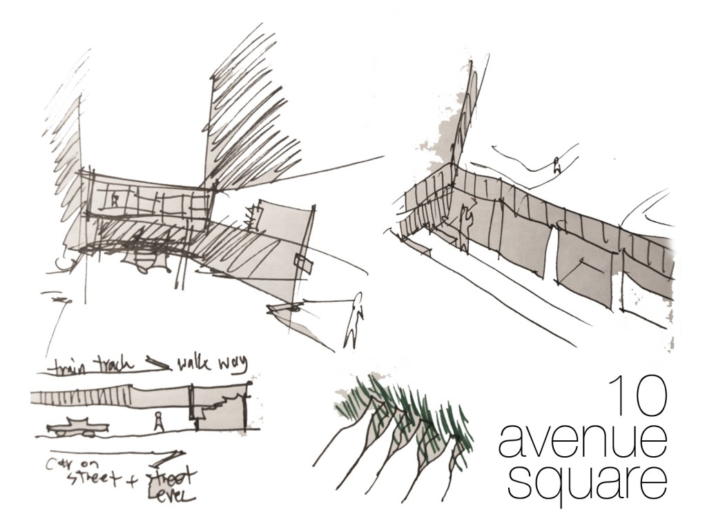
{kind=link}
Prototype
The team chose ‘Rock Paper Scissors’ as the intervention game. We all agreed this game would have the most likely success rate as it is universally known and easily played. The strategy is to create unusual ways of playing the game that can be effectively implemented at a distance but will also spark interest and allow players to experience a very traditional game in non-traditional ways. Paul constructed instant easels to hold the game pieces making the game more presentable. This allowed passerbys to observe a connection between the street and the park in an organized way.
The game is begun when 2 players have agreed to participate and one team member from Typhoon/Flux will initiate ‘Rock Paper Scissors SHOOT!’ countdown using posters so each team will know when to shoot.
1st Iteration
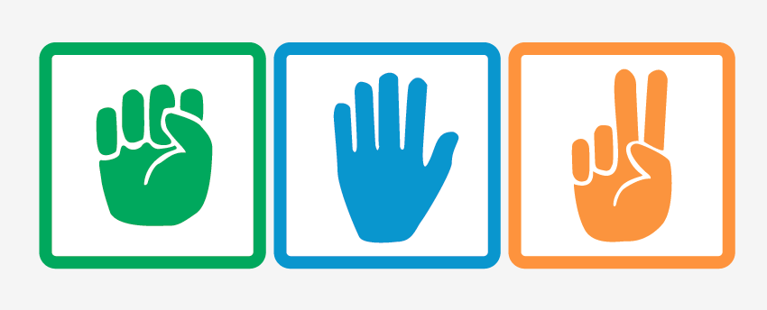
In the first iteration we designed icons for each component of the game. Players will chose the symbol to be played before countdown begins and at the end of the countdown they will simultaneously reveal their choice.
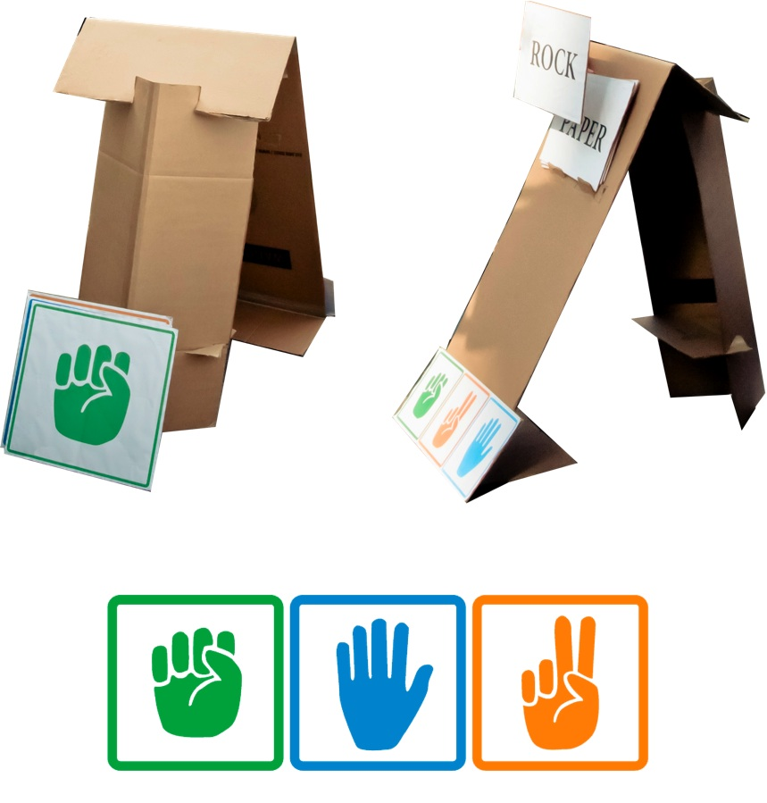
This method proved to be successful as players were engaged and wanted to keep playing until there was a winner, but there were also some elements that could have been improved. Score keeping would have reinforced competitiveness and prolonged interest in playing. We found that getting people on the street to play and keeping them playing was an obstacle. The idea of incorporating some sounds or scorecards would aid in keeping track of which player was winning.
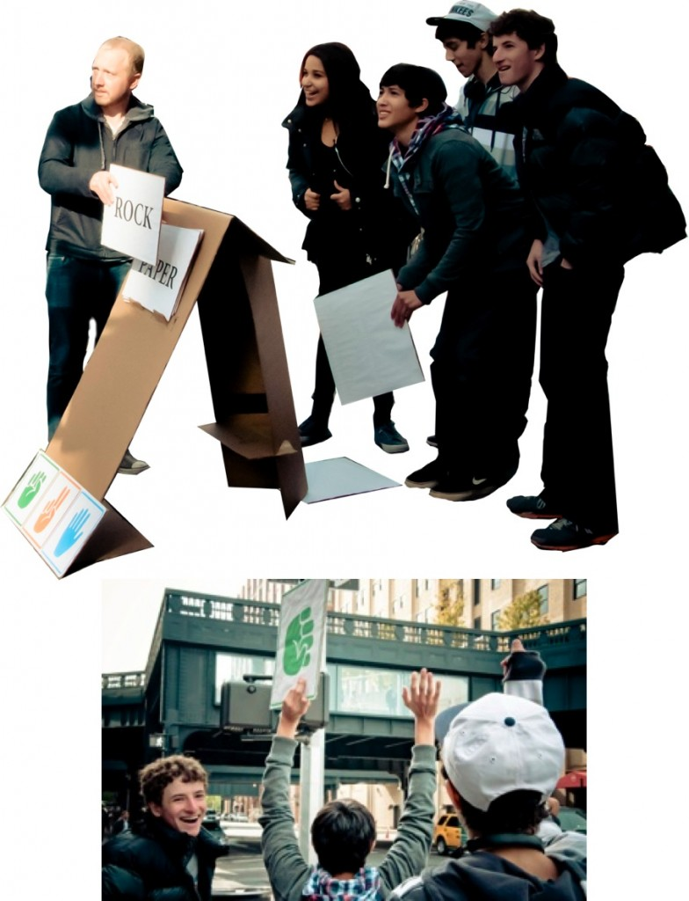
{kind=link}
{kind=link}
{kind=link}
2nd Iteration
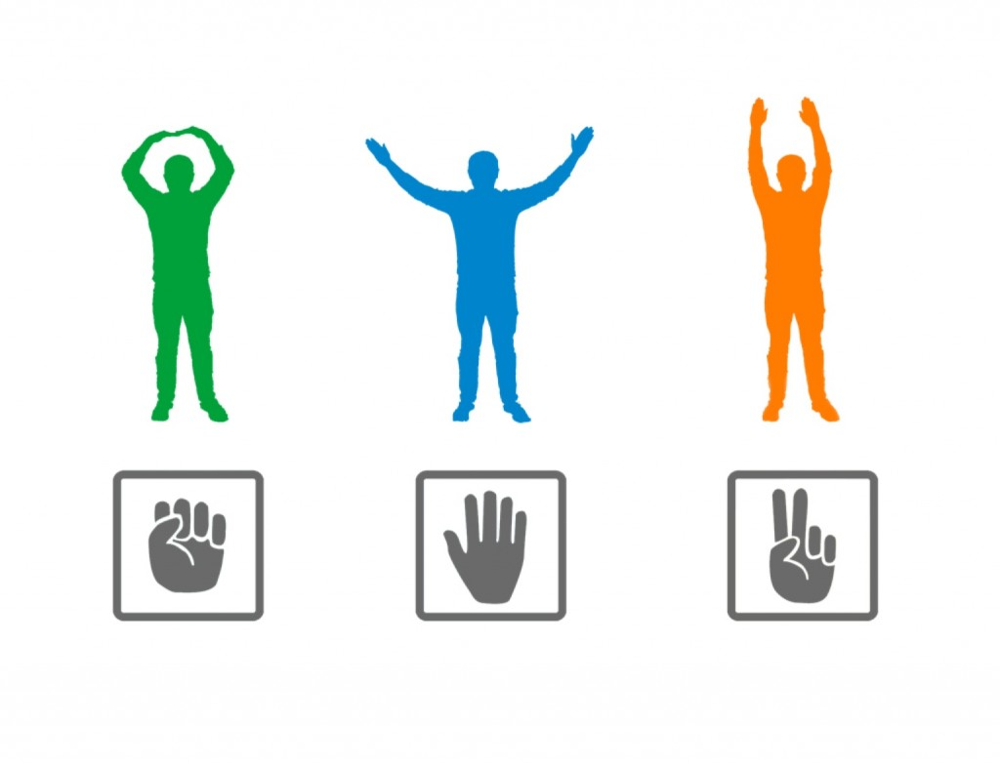
The second iteration involved players mimicking RPS symbols using body movements. In order to implement this version we had a diagram constructed showing what body movement coincided with each game element. We directed players to study the diagrams and then watch a Typhoon/Flux member initiate countdown.
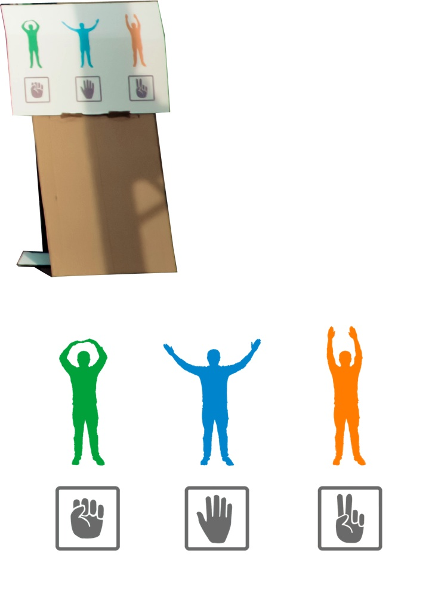
The second iteration was successful to a degree, as players enjoyed participating and using body motions to play, there was some inconsistencies in knowing exactly which symbol they were intending to play. There were instances where players were not sure who won or what symbol their opponents chose. Some ‘cheating’ was also observed when players slightly changed their body movement symbol to beat their opponent. However, this element could be easily improved by designing more concrete body movements to represent each symbol.
{kind=link}
{kind=link}
3rd Iteration
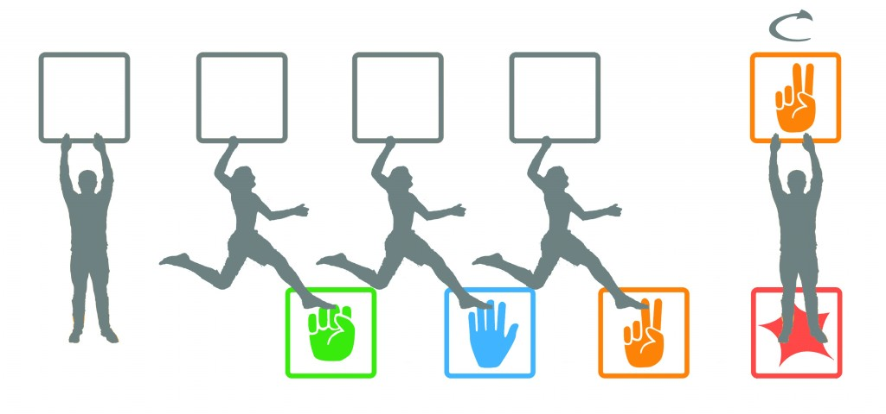
In the 3rd iteration we had to improve the interaction between the street and theatre and make the game more pronounced to passerby’s especially people walking on the street. We provided a visual prompt for game play as well as QR code that sends players to Facebook page that has a short message for users and introduction video (no instructions on page). We also left large game pieces on sidewalk in order to draw users to game location and incorporated walkie talkies to enable verbal communication.
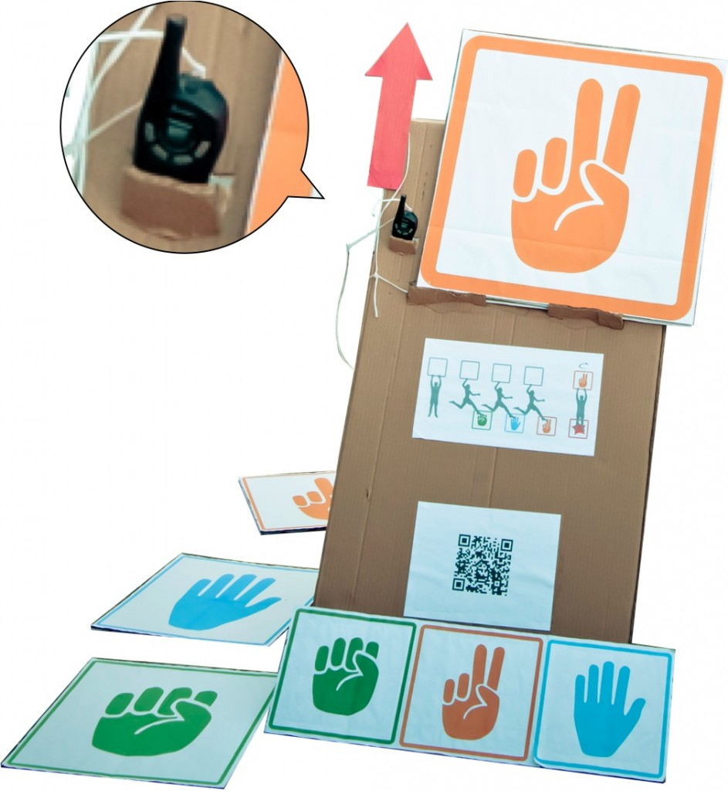
Players were not drawn to game on street as well as they were in the park, need to make street level signage more pronounced. Confusion persisted over how to actually begin playing game using only icons, need to provide even clearer game objectives and slight change of game initiation using some text.
{kind=link}
{kind=link}
4th Iteration
We created diagrams illustrating steps for players to follow to better understand game play and initiation. Diagramed rules of game so players will know who winner is and incorporated minimum amount text. Added a scorecard for players to keep track and also see scores posted on Facebook using QR code.
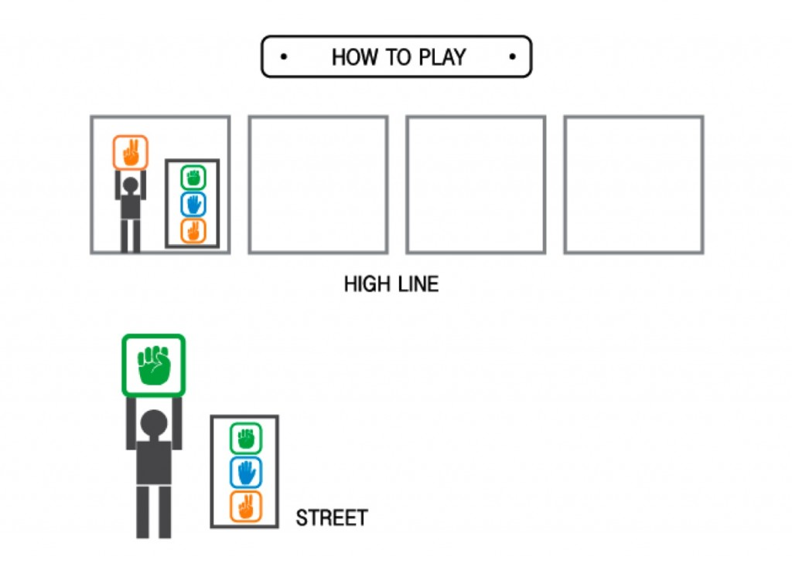
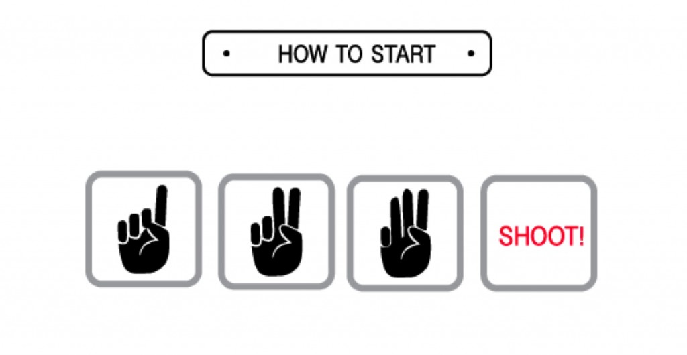
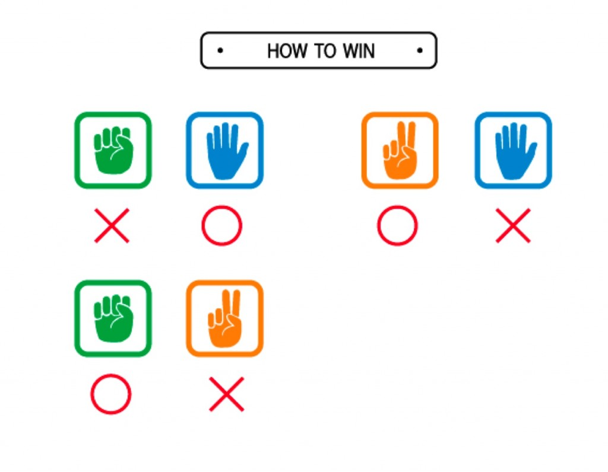
Game graphics still slightly unclear to all, need to further emphasize what game is, need to re-design game pieces to align with hand symbols. Will further prompt game initiation when players need to draw by adding text on back of playing cards to diagram countdown numbers visible when you turn card.
{kind=link}
{kind=link}
{kind=link}